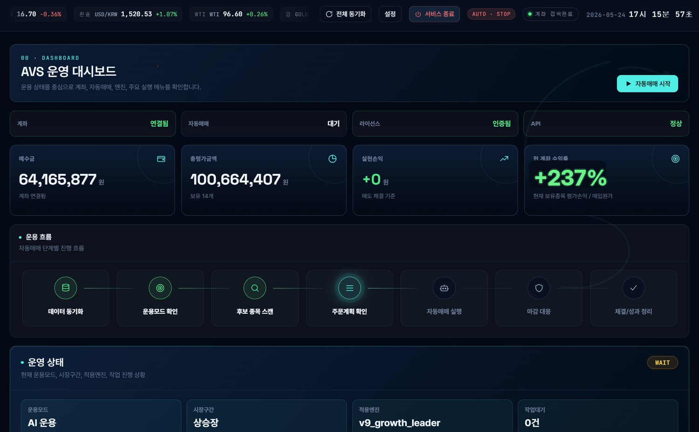

운용 흐름이 보이는 자동매매 운영 시스템
Alpha Viper System [QUANT ENGINE] | V1.0은 종목 선별, 포트폴리오 구성, 주문 감시, 리스크 기준, 거래 기록을 하나의 작업 흐름으로 정리합니다.
제품 개요
사용자가 정한 운용 조건을 기준으로 데이터를 정리하고, 조건 충족 여부와 주문 흐름을 확인합니다. 화면은 대시보드 중심으로 구성되어 상태 확인, 설정, 기록 관리가 한 번에 이어집니다.
대상 고객
- 여러 종목을 동시에 감시해야 하는 투자자
- 매매 기준과 기록을 체계화하려는 사용자
- 모의투자와 실전투자 흐름을 분리해 점검하려는 고객
- 포트폴리오 비중과 거래 로그를 한 화면에서 관리하려는 운영자

Operating Loop
확인할 항목을 화면 안에서 끝냅니다.
계좌 상태, API 연결, 라이선스, 자동매매 상태, 예수금, 보유종목, 손익, 주문계획을 한 화면 흐름으로 배치했습니다.
운영 대시보드
엔진 관리
종목 선별
스케줄 설정
거래 로그
보유잔고 관리
Product Standard
판매 문구보다 실제 운영 구조를 보여줍니다.
홈페이지 문구는 기능의 역할과 사용 흐름을 기준으로 정리했습니다. 과장 표현은 줄이고, 고객이 확인할 수 있는 화면·절차·기록 중심으로 설명합니다.
운영 화면 중심
계좌 상태, API 연결, 자동매매 상태, 보유 잔고, 거래 로그를 한 화면에서 확인합니다.
사용자는 현재 운용 상태를 빠르게 파악하고 필요한 설정으로 이동할 수 있습니다.
관리 기준 명확화
종목 선별, 매수·매도 조건, 손절·익절, 비중 기준을 운용 전에 정리합니다.
체결 이후에는 결과와 사유를 기록해 다음 점검 자료로 남깁니다.